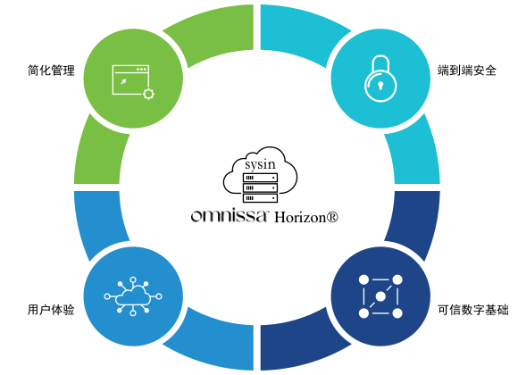

请访问原文链接：Omnissa Horizon 8 2603 发布 - 虚拟桌面基础架构 (VDI) 和应用软件 查看最新版。原创作品，转载请保留出处。
作者主页：sysin.org
Horizon 8
formerly VMware Horizon

通过从本地到云端高效、安全地交付虚拟桌面和应用程序，提升数字工作空间体验。
随时随地访问虚拟桌面和应用程序
从云端管理
使用基于云的控制台和 SaaS 管理服务跨私有云、混合云和多云基础设施高效管理桌面和应用程序。
提供端到端安全性
利用 Horizon 基础设施内置的内在安全性来获得对企业资源的高度安全的远程访问 - 提供从设备到数据中心再到云的保护。
提高投资回报率
借助行业领先的 VDI、DaaS 和应用程序平台实现跨私有云和公共云的灵活部署选项，从而节省成本并实现业务价值。
新的独立软件公司 Omnissa 诞生了
2024 年 7 月 1 日
今天标志着一个令人难以置信的里程碑。
随着 KKR 宣布完成对我们的收购，Omnissa 诞生了。
我们现在是一家独立的软件公司，拥有人才、技术和生态系统资产的独特组合，专门致力于为世界各地的客户和合作伙伴提供变革性的工作空间体验。
在 KKR 的支持下，我们现在拥有敏捷性、承诺和投资来承担我们作为定义和引领这个 260 亿美元市场机遇的知名软件公司的地位。
这一刻已经酝酿了两年多，我很自豪能被一支经验丰富的管理团队包围，他们为实现我们的共同愿景而不懈努力。
我们的 4,000 名员工将受到共享所有权结构的约束，这使我们所有人踏上重新定义行业和工作未来的旅程。
这一刻是我们的客户和合作伙伴促成的。我们不会轻视您的忠诚。我们的存在得益于您对我们技术的深度投资以及您对实现人工智能驱动的自主工作空间愿景的强烈渴望。我们打算通过我们的平台创造巨大的新价值并简化我们的合作方式来继续赢得您的信任。
本月晚些时候，我们将举办 Omnissa Live，这是一系列活动中的第一个，旨在充分阐明我们作为一家独立公司的愿景和战略 (sysin)，并探索我们未来看到的令人兴奋的机会。请计划在那里加入我们。我们知道过去七个月造成了不确定性。今天，我可以肯定地向您保证，我们准备将您带到新的高度。
对于我们的技术同行——操作系统、云环境、安全系统、应用程序平台和设备领域的创新领导者和品类先驱——我们很高兴与您深入合作，为我们的客户和企业建立一个充满灵活性和选择的生态系统。你的。
是时候去上班了。
Shankar Iyer，Omnissa 首席执行官
- 该交易还将包括在某些司法管辖区进行本地交割，预计将在 2024 年剩余时间内完成。*
特征: 重新定义 VDI、DaaS 和应用程序体验

灵活的云部署选项
使用 Horizon 控制平面的自动化和 SaaS 服务在本地或公共云或混合云中部署和管理桌面和应用程序。
现代管理
使用即时克隆技术部署功能齐全、个性化的虚拟桌面和应用程序，Workspace ONE® 移动威胁防御 到 App Volumes。
最佳的最终用户体验
通过安全的工作站级性能 (sysin)、丰富的图形以及优化的语音和视频提供卓越的远程体验。
简化的应用程序管理
使用 App Volumes 跨 VDI、DaaS 和已发布的应用程序环境高效地按需交付和管理应用程序。
端到端可见性
使用 Workspace ONE Intelligence 在可定制的仪表板上监控性能并获得可行的见解。
用例: 解决您最棘手的挑战
凭借从本地到公共云和混合云的灵活部署选项，Horizon 支持关键用例，使组织能够响应变化并推动业务成果。
赋能混合劳动力
提供一致的桌面和应用程序体验 (sysin)，让员工随时随地在任何设备上保持联系并保持高效。
管理波动的容量
随着最终用户需求的变化，Horizon 可以轻松地扩大或缩小访问范围，并为支持承包商、季节性工人、并购和学生提供安全访问。
启用云优化用例
将 Horizon 无缝扩展到您选择的公共云提供商，以支持数据中心扩展、突发和应用程序托管。
确保业务连续性
Horizon 建立在敏捷的基础设施之上，提供管理变革所需的弹性，并通过保持员工的联系和生产力来促进业务连续性。
比较 Horizon 版本和定价
Horizon Standard Plus
提供适用于多云部署的全套云管理服务的优质桌面交付。
Windows VDI
基本的安全和用户体验功能
本地私有或公共 VMware vSphere 云上的单云部署
每月价格为 5.79 美元 / 用户起
Horizon Enterprise Plus
高级桌面和应用程序交付，以及针对单一云部署的精选云管理服务。
Windows 和 Linux VDI 和应用程序交付
高级管理功能，包括 App Volumes 和 DEM Enterprise
基本的安全和用户体验功能 (sysin)
本地私有或公共 VMware vSphere 云上的单云部署
每月价格为 10.71 美元 / 用户起
Horizon Universal
为多云部署提供全套云管理服务，提供优质桌面和应用程序交付。
Windows 和 Linux VDI 和应用程序交付
高级管理功能，包括 App Volumes 和 DEM Enterprise
先进的安全性和用户体验功能
Horizon 的 Workspace ONE Intelligence
灵活地部署在本地私有云和 / 或公共云中
每月价格为 12.50 美元 / 用户起
Horizon Apps Universal
强大的应用程序交付以及用于混合云部署的全套云管理服务。
Windows 和 Linux 虚拟应用程序交付
高级管理功能，包括 App Volumes 和 DEM Enterprise
先进的安全和用户体验功能集 (sysin)
Horizon 的 Workspace ONE Intelligence
灵活地部署在本地私有云和 / 或公共云中
每月价格为 6.00 美元 / 用户起
Horizon Apps Standard
通过适用于本地或云部署的基本云管理服务进行简单的应用程序交付。
Windows 和 Linux 虚拟应用程序交付
标准管理功能
基本的安全和用户体验功能
Horizon 的 Workspace ONE Intelligence
单云部署在本地私有云或公有云中
每月价格为 4.67 美元 / 用户起
新增功能
Horizon 8 2603 | 2026 年 4 月 14 日
详见：Omnissa Horizon 8 2603 (8.18) ESB Release 新增功能和文件列表
下载地址
体验真正的多云管理和近乎实时的可见性。
- VMware Horizon 8 2603 Enterprise, 2026-04-14
- VMware App Volumes 4, version 2603, 2026-04-14
- VMware Dynamic Environment Manager Enterprise 2603, 2026-04-14
- Omnissa ThinApp 2603, 2026-04-14
- VMware Unified Access Gateway 2603, 2026-04-14
- Windows OS Optimization Tool for Omnissa Horizon 2603, 2026-04-14
Omnissa Horizon Clients 2603
Omnissa Horizon Clients
Omnissa Horizon Client for Windows
- Omnissa Horizon Client for Windows -> 点击下载
Omnissa Horizon Client for macOS
- Omnissa Horizon Client for macOS -> 点击下载
Omnissa Horizon Client for Linux
Omnissa Horizon Client for iOS
Omnissa Horizon Client for iOS devices -> 链接Omnissa Horizon Client for Android
Omnissa Horizon Client for Chrome
- Omnissa Horizon Client for Chrome devices -> 点击下载
Omnissa Horizon 8 2603 Enterprise
Horizon Enterprise Files
- 百度网盘链接：https://pan.baidu.com/s/1EmU4OFq4eyhd1pQOELRk3Q?pwd=?<专享>
- 通过捐赠下载此版本：点击 💙支付宝 或者 💚微信支付，扫码备注邮箱（用于识别注册用户，忘记备注请提供时间），
评论区留言指定版本（默认当前最新版），在其他平台留言恕无法处理。 - 提示：捐赠或赞赏属于自愿赠予行为，提交后即表示您对作者的支持与认可。为避免误操作，请在确认前仔细检查金额，支付完成后将无法撤销或退还。
- 已单独通过导航栏
捐助获取上个版本（包括 2412 和 2503），可再次获赠此更新版 - 可选以下组件：
- VMware App Volumes 4, version 2603, 2026-04-14
- VMware Dynamic Environment Manager Enterprise 2603, 2026-04-14
- Omnissa ThinApp 2603, 2026-04-14
- VMware Unified Access Gateway 2603, 2026-04-14
- Windows OS Optimization Tool for Omnissa Horizon, 2026-04-14
File info
Horizon Connection Server (64-bit)
File size: 390.65 MB
Name: Omnissa-Horizon-Connection-Server-x86_64-2603-8.18.0-24169897839.exe
Connection Server to provision and manage desktopsHorizon Agent (64-bit)
File size: 242 MB
Name: Omnissa-Horizon-Agent-x86_64-2603-8.18.0-24273927036.exe
Guest agent required for each remote desktopHorizon Agents Installer Metadata (json)
File size: 0.31 KB
Name: Omnissa-Horizon-Agent-x86_64-2603-8.18.0-24273927036.exe-metadata.json
Horizon Agents Installer Metadata (json)Horizon Agent Direct-Connection (64-bit)
File size: 42 MB
Name: Omnissa-Horizon-Agent-Direct-Connection-x86_64-8.18.0-24273927036.exe
An installable plugin to support direct connect and Horizon AirHorizon Web Client Direct-Connection
File size: 5.13 MB
Name: Omnissa-Horizon-Web-Client-2603-8.18.0-23833265393.zip
HWeb server static content for supporting Web Client with Horizon Agent Direct-ConnectionHorizon GPO Bundle
File size: 1.01 MB
Name: Omnissa-Horizon-Extras-Bundle-2603-8.18.0-24230927696.zip
Zip file containing various ADM template files to configure Horizon functionalityHorizon Advisor
File size: 361.1 KB
Name: Omnissa-Horizon-Advisor-2603-8.18.0-24169897839.zip
PowerShell-driven administration tool for managing Omnissa Horizon environmentsHorizon Agent for 64-bit Linux
File size: 225.37 MB
Name: Omnissa-horizonagent-linux-x86_64-2603-8.18.0-24278394073.tar.gz
Horizon agent for systems running 64-bit LinuxHorizon Agent for 64-bit Redhat8.x/9.x Linux
File size: 157.74 MB
Name: Omnissa-horizonagent-linux-2603-8.18.0-24278394073.el.x86_64.rpm
Horizon agent for system running 64-bit Redhat8.x/9.x LinuxHorizon Linux Agent Direct-Connection (64-bit)
File size: 58.99 MB
Name: Omnissa-horizonagent-linux-vadc-x86_64-2603-8.18.0-24278394073.tar.gz
Horizon Linux Agent Direct-Connection (64-bit) installerHorizon Recording Server
File size: 82.57 MB
Name: HorizonRecordingServer-1.16.0.1048.exe
Server to manage recording of virtual sessionsHorizon Recording Agent
File size: 4.78 MB
Name: HorizonRecordingAgent-1.16.0.749.exe
Agent software that records virtual sessionsHorizon Recording Agent for Linux (tar.gz format)
File size: 31.29 MB
Name: Horizon.Recording.Linux.Agent-1.16.0.736.tar.gz
Agent software that records virtual sessionsHorizon Recording Agent for Linux (rpm format)
File size: 25.6 MB
Name: HorizonRecording-Linux-Agent-1.16.0.714-2603.x86_64.rpm
Agent software that records virtual sessions
Omnissa App Volumes 4, version 2603
Omnissa App Volumes 4 Files
App Volumes ISO file
File size: 584.16 MB
Name: Omnissa_App_Volumes_v4.21.0_10042026.ISO
Omnissa App Volumes desktop product disk image fileUnlimited desktops license key
File size: 0.68 KB
Name: App_Volumes_License.key
Omnissa App Volumes perpetual license file for unlimited desktopsApp Volumes Agent (64-bit)
File size: 12.23 MB
Name: Omnissa-AppVolumes-Agent-x64-2603-4.21.0-5081.msi
App Volumes Agent (64-bit)App Volumes Agent Installer Metadata (json)
File size: 0.32 KB
Name: Omnissa-AppVolumes-Agent-x64-2603-4.21.0-5081-metadata.json
App Volumes Agent Installer Metadata (json)
Omnissa Dynamic Environment Manager Enterprise 2603
Omnissa Dynamic Environment Manager Enterprise Files
Omnissa Dynamic Environment Manager
File size: 37.05 MB
Name: Omnissa-DEM-Enterprise-2603-10.19.zip
Contains all Dynamic Environment Manager installation files and administrative templatesProduction License File
File size: 0.22 KB
Name: Omnissa-DEM-10.19.0-GA.lic
Production License File
Omnissa ThinApp 2603
Omnissa ThinApp 2603
ThinApp Installer
File size: 18.67 MB
Name: Omnissa-ThinApp-Enterprise-2603.0.0-279.exe
Installation file containing all windows components needed to create ThinApp packagesThinApp SDK
File size: 3.39 MB
Name: Omnissa-ThinAppSDK-2603.0.0-279.zip
Archive containing all files for the ThinApp SDK
Omnissa Unified Access Gateway 2603
Unified Access Gateway Enterprise files. For use with Horizon Enterprise.
Unified Access Gateway (UAG) 2603 for vSphere, AWS, Google Cloud and Nutanix (Non-FIPS)
File size: 3755.25 MB
Name: euc-unified-access-gateway-26.03.0.0-24155660089_OVF10.ovaUnified Access Gateway (UAG) 2603 for vSphere, AWS and Nutanix (FIPS)
File size: 3457.8 MB
Name: euc-unified-access-gateway-fips-26.03.0.0-24155663883_OVF10.ovaUnified Access Gateway (UAG) 2603 for Microsoft Azure (Non-FIPS)
File size: 3606.09 MB
Name: euc-unified-access-gateway-26.03.0.0-24155660089_OVF10-vhd.zipUnified Access Gateway (UAG) 2603 for Microsoft Azure (FIPS)
File size: 3309.58 MB
Name: euc-unified-access-gateway-fips-26.03.0.0-24155663883_OVF10-vhd.zipUnified Access Gateway (UAG) 2603 for Microsoft Hyper-V (FIPS)
File size: 3309.68 MB
Name: euc-unified-access-gateway-fips-26.03.0.0-24155663883_OVF10-vhdx.zipUnified Access Gateway (UAG) 2603 for Microsoft Hyper-V (Non-FIPS)
File size: 3606.18 MB
Name: euc-unified-access-gateway-26.03.0.0-24155660089_OVF10-vhdx.zipUnified Access Gateway (UAG) 2603 PowerShell Scripts
File size: 139.9 KB
Name: uagdeploy-26.03.0.0-24155660089.zip
Windows OS Optimization Tool for Omnissa Horizon 2603
Windows OS Optimization Tool Files
Omnissa OS Optimization MDT Environment Automation tool
Omnissa OS Optimization Tool plugin for Microsoft Deployment Toolkit (MDT)
Omnissa OS Optimization Tool SCM Task Sequence
Windows OS Optimization Tool for Horizon
相关产品：Omnissa Access 24.12 - 身份识别解决方案
VMware Horizon：VMware Horizon 8 下载汇总 (version 2312) - 虚拟桌面基础架构 (VDI) 和应用软件

文章用于推荐和分享优秀的软件产品及其相关技术，所有软件默认提供官方原版（免费版或试用版），免费分享。对于部分产品笔者加入了自己的理解和分析，方便学习和研究使用。任何内容若侵犯了您的版权，请联系作者删除。如果您喜欢这篇文章或者觉得它对您有所帮助，或者发现有不当之处，欢迎您发表评论，也欢迎您分享这个网站，或者赞赏一下作者，谢谢！
 支付宝赞赏
支付宝赞赏  微信赞赏
微信赞赏赞赏一下
敬请注册！点击 “登录” - “用户注册”（已知不支持 21.cn/189.cn 邮箱）。 请勿使用联合登录（已关闭）。